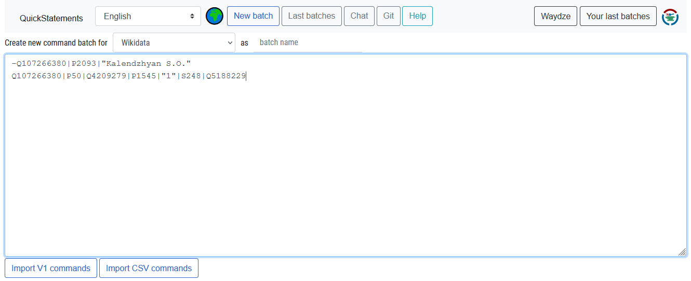
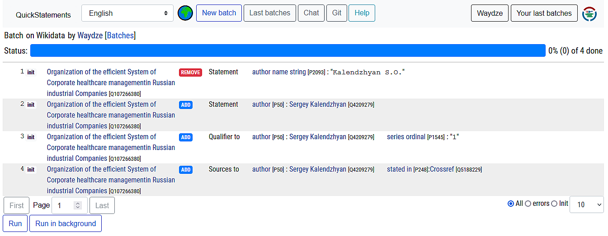
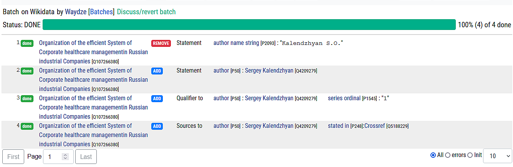
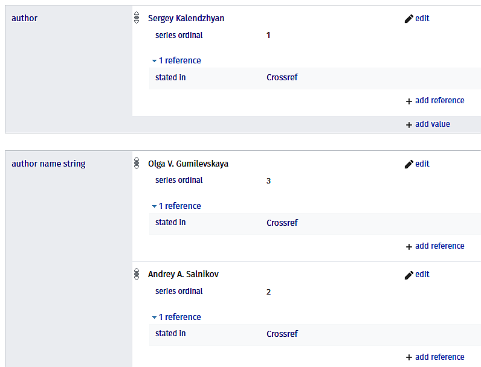
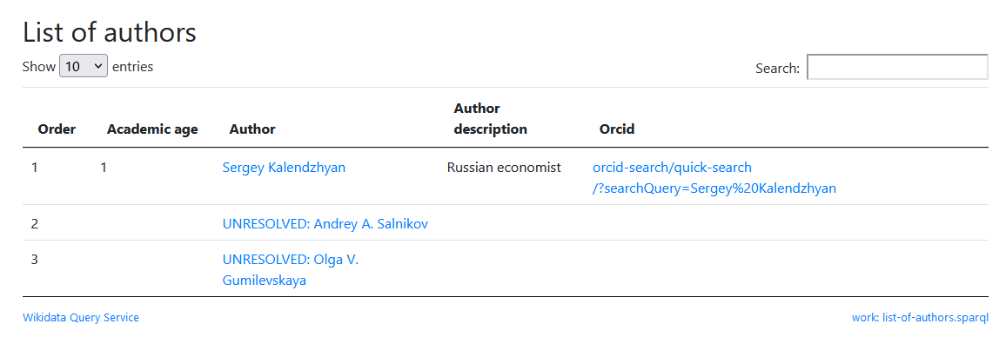
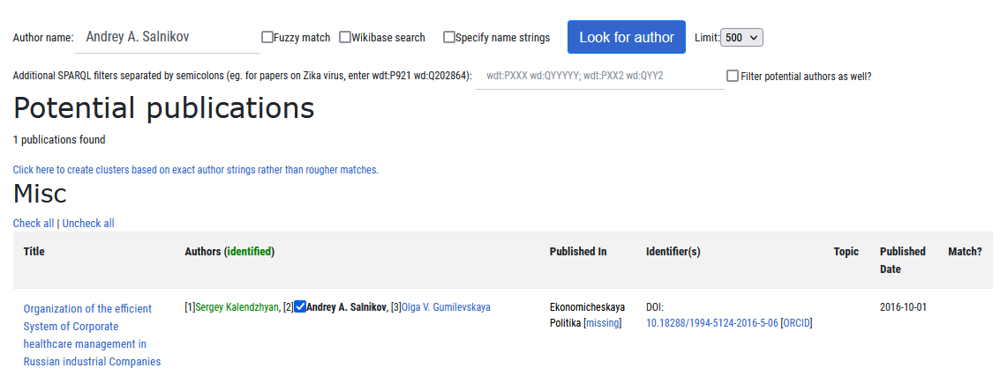
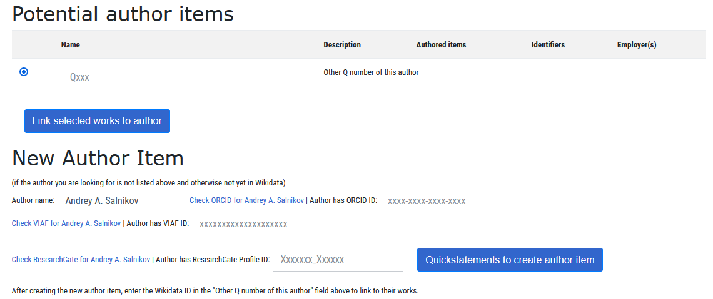

The post continues my quest to improve the presence of academic journal(s) in Wikidata. I reviewed the different searching approaches to find the authors, especially those with with non-English names, in Wikidata and upload the author metadata via QuickStatements.
In a previous post I was trying to do what is called an author disambiguation using the open metadata from CrossRef, Microsoft Academic and ORCID. I took 10 DOIs as an example and identified the ORCIDs for a number of authors. This initial idea was also to upload the author metadata info to Wikidata in the same post.
While I was working on it I realized that I completely lost a sense of smell. I decided to publish the previous part and postpone exercising with Wikidata till better days. I was lucky, it was not as bad as it is said it could be - a week later my only discomfort is that I still do not know the smells.
So, I am back, full of forces, and in this post I am going to prepare and uploade the author metadata to Wikidata.
You may be wondering why to bother about the journal’s standing in Wikidata, when there are many citation indices and A&I databases that present the metadata. Apologies for not having a detailed and well-argumented intro for such a question. Instead, I would give you few examples that I find illustrative:
this is how the online service Scholia shows the journal Atmospheric Chemistry and Physics and the article The Alzheimer’s disease-associated amyloid beta-protein is an antimicrobial peptide, based on the Wikidata. If the journals and articles exists as Wikidata items and contain the metadata, the items can be cited in Wikipedia articles or be linked to other non-journal Wikidata items like author biographical facts, events, awards, organizations, topics, molecules, news, products, you name it. Altogether this forms a huge knowledge graph, absolutely incomparable with the citation/search engines we used to. This is the only way to highlight the journal impact in multiple facets, to move beyond the citation obsession.
here is a collection of Wikidata queries prepared by Martin Poulter, demonstrating how the linked items can be investigated. There are more high-brow collections like this one with biomedical queries. You can run yourself any of those examples by clicking Try it! or Execute url links next to the SPARQL snippets.
But not every journal looks this great in Wikidata to benefit from semantic blessing. In one of my previous posts I described how the Russian academic journals look in Wikidata and Wikipedia.
More argumentation on Wikidata’s value for the academic journals can be found in the original works Google Scholar: Wikidata + Journal.
How the Wikidata contents can be added or improved? There are few ways:
manually. This is plain. You need to register to Wikidata, find the journal record and start copy/pasting the metadata bits.
with a help of tools, but still manually. There are some great tools like Mix'n'match, Author Disambiguator, Wikidata Link Reconciler and many others (listed here). Some of it requries of one to be an Autoconfirmed user, which is a special status you get after having edited a certain number of items (a meritocracy in action if you will).
automatically, with API-based tools.
In this post I am going to use the most popular tool named QuickStatements. This tool is fantastic, as it allows you to create/edit the Wikidata items by submitting the materials in very simple formats like CSV/TSV or a URL-encoded string. Like many other Wiki tools it was developed by Magnus Manske.
You will not be able to submit the materials in batches via QuickStatements until you get the status of Autoconfirmed User. But take it as a hint - running QuickStatements through URL does not require the status, so you can start with it to reach the status and then switch to the batches. Or you can just deal with Wikimedia API directly. In this post I am going to describe only the batch uploading available for autoconfirmed users.
The good practice is to:
test your editing approaches on Wikidata Sandbox,
always check what you have done,
always fix the errors you made.
This discipline can seem very annoying to some creative minds, but this is a public tool, it will be spoiled without the rules.
In previous post I took 10 DOIs and made few manipulations to obtain the ORCIDs for some of the authors (see below). The CRF in the column names stands for CrossRef (as a source), MAG - for Microsoft Academic.
final_data_checked <- paste0(dir, "/final.data.xlsx") %>%
readxl::read_xlsx(col_types = "text") %>%
filter(score!="D") %>%
arrange(doi, score)
final_data_checked %>%
mutate(orcid = ifelse(score=="A", orcid, NA_character_)) %>%
select(doi, order, orcid, `CRF family`, `CRF given`,
Scopus_AuthID, ResearcherID, `MAG Author ID`) %>%
DT::datatable(rownames = FALSE, escape = FALSE, class = 'compact striped',
caption = htmltools::tags$caption(
style = 'caption-side: bottom;
text-align: left; font-size: 80%;
color: #969696; font-family: Roboto Condensed;',
'Data: see in the text.'),
options = list(searchHighlight = TRUE, dom = 'Brtip',
autoWidth = FALSE,
columnDefs = list(
list(width = '150px', targets = c(0,2)),
list(className = 'dt-center', targets = c(1)))
))
But we can not submit DOI-ORCID links to Wikidata. The process needs to be organizaed a bit different:
we have check if the article are present in Wikidata (searching by DOI) and what metadata are available
next we should check for every author if it is present in Wikidata as an item (searching by ORCID, Scopus Author ID, Researcher ID, Microsoft Academic ID, and also by the author’s name)
once we have collected the details about article and author, we can submit one of 2 statements connecting those details:
wikidata item corresponding to the article (Q….) has an author (P50), which is Wikidata item (Q….), corresponding to the author.
wikidata item corresponding to the article (Q….) has an author string (P2093), which is not a Wikidata item, but a plain text.
The statements above are simplified a bit, the Wikidata rules require the statements to be supported with the references and some specific qualifiers (statements for additional properties). The author information for the scholarly article needs to be backed with a source (i.e. CrossRef) and should have an ordinal. It may also have other properties like affiliation or affiliation string.
The package WikidataR, still in development, provides very practical options to work with Wikidata. We will use its function qid_from_identifier to find Wikidata by DOI.
dois_file <- paste0(dir, "dois_wiki.csv")
if(!file.exists(dois_file)){
dois <- final_data_checked %>% select(doi) %>% distinct()
for (i in 1:nrow(dois)){
print(i)
res <- qid_from_identifier(property = "DOI", value = dois$doi[i]) %>%
unnest(qid)
dois[i, "wikidata"] <- ifelse(nrow(res)==1, as.character(res$qid[1]), "")
}
write_excel_csv(dois, dois_file)
} else {
dois <- read_csv(dois_file)
}
dois %>%
DT::datatable(rownames = FALSE, escape = FALSE, class = 'compact striped',
caption = htmltools::tags$caption(
style = 'caption-side: bottom;
text-align: left; font-size: 80%;
color: #969696; font-family: Roboto Condensed;',
'Data: wikidata.org.'),
options = list(searchHighlight = TRUE, dom = 'Brtip',
autoWidth = FALSE))
The publications are already present in Wikidata.
Let’s check of they already have anything about the authors. We can collect the author information using another function of WikidataR named get_item.
The code below obtains all the claims of the Wikidata item and extracts those that we are interested in:
P50 (is author of) - statements linking the articles to the persons exisisting in Wikidata
P2093 (author name string) - statements assigning the autor name string to the article
P1545 (series ordinal) - a qualifier showing the author’s place in the author list
P248 (stated in) - statements used as the references (for the statements) pointing at a source of information. I suspect that there could be other properties used as references (maybe P3452 - “inferred from”), but this does not matter in our case. If the author data is supported by strange reference, we will re-write it and refer to CrossRef as a source of metadata.
wd_auth_info_file <- paste0(dir, "wikidata_author_existing_details.csv")
if(!file.exists(wd_auth_info_file)){
wd_pub_existing_data <- c()
for (i in 1:nrow(dois)){
b <- get_item(dois$wikidata[i]) %>% map(pluck, "claims")
b <- b[[1]][c("P2093", "P50")]
wd_pub_auth_data <- cbind(
#1 part. author strings or Wiki items
b %>% map(~{.x[["mainsnak"]]["datavalue"] %>% map_df("value") %>%
select(any_of(c("author_wiki" = "id",
"author_wiki" = "datavalue")))}) %>%
map_df(~.x) %>%
mutate(author_wiki_type = ifelse(grepl("^Q\\d+",author_wiki),
"P50", "P2093")),
#2 part. author statement IDs
b %>% map(~{.x[["id"]]}) %>% unlist(use.names = FALSE) %>%
enframe(name = NULL, value = "Statement_ID"),
#3 part. author order qualifiers
b %>% map_df(~{.x[["qualifiers"]][["P1545"]] %>%
map_df("datavalue")}) %>%
select(any_of(c("order" = "value"))) %>%
mutate(qualif_prop = "P1545"),
#4 part. references/sources
b %>% map_df(~{.x[["references"]] %>%
map_df(pluck, "snaks", "P248") %>%
map_df(list("value","id"))}) %>%
select(source = datavalue) %>%
mutate(source_prop = "P248")
) %>%
mutate(qid = dois$wikidata[i]) %>%
relocate(qid)
wd_pub_existing_data <- wd_pub_existing_data %>% bind_rows(wd_pub_auth_data)
print(i)
}
write_excel_csv(wd_pub_existing_data, wd_auth_info_file)
} else {
wd_pub_existing_data <- read_csv(wd_auth_info_file,
col_types = cols(.default = col_character()))
}
wd_pub_existing_data %>%
relocate(Statement_ID, .after = source_prop) %>%
DT::datatable(rownames = FALSE, escape = FALSE, class = 'compact striped',
caption = htmltools::tags$caption(
style = 'caption-side: bottom;
text-align: left; font-size: 80%;
color: #969696; font-family: Roboto Condensed;',
'Data: wikidata.org.'),
options = list(searchHighlight = TRUE, dom = 'Brtip',
autoWidth = TRUE,
columnDefs = list(
list(width = '430px', targets = c(7)),
list(width = '150px', targets = c(1)),
list(className = 'dt-center', targets = c(2,3,4,5,6)))
))
This is how the author relations look like:
Or, in cases when the author exists as Wikidata item and linked to the Wikidata item for the article, the relation look like:
Are we satisfied with the author names present in Wikidata as text (authorname string)? Of course, we should not be. With text strings for the authors Wikidata is just like any other A&I database. To see a magic of Wiki, we have to substitute the author name strings (defined by P2093) with the Wikidata items corresponding to the persons (defined by P50). With those authors our analytical reach will expand beyond the names, as we will be able to analyze the relations of the authors (known to Wikidata).
Let’s search the Wikidata items corresponding to the authors - for this we can use the author’s name and the personal identificators (PID).
First, we will try to find the Wikidata items by PIDs. In order to do that I will take the initital data and filter out the authors for which I earlier found the ORCIDs and other PIDs.
zz1 <- final_data_checked %>%
filter(score=="A") %>%
select(doi, order, orcid, Scopus_AuthID, ResearcherID, `MAG Author ID`) %>%
filter(!is.na(orcid)) %>%
mutate_at(c("Scopus_AuthID", "ResearcherID"), ~str_split(.x, "\\|")) %>%
unnest(c("Scopus_AuthID", "ResearcherID")) %>%
pivot_longer(-c("doi", "order"), names_to = "src", values_to = "id") %>%
mutate_all(~str_squish(.x)) %>%
filter(!is.na(id))
zz1 %>% DT::datatable(rownames = FALSE, escape = FALSE, class = 'compact striped',
caption = htmltools::tags$caption(
style = 'caption-side: bottom;
text-align: left; font-size: 80%;
color: #969696; font-family: Roboto Condensed;',
'Data: wikidata.org.'),
options = list(searchHighlight = TRUE, dom = 'Brtip',
autoWidth = FALSE))
Let’s search them one by one in Wikidata using qid_from_identifier function from WikidataR package with the appropriate property for each PID type.
wd_authors_by_ids_file <- paste0(dir, "wd_authors_by_ids.csv")
if(!file.exists(wd_authors_by_ids_file)){
for (i in 1:nrow(zz1)){
if(zz1$src[i]=="orcid"){
res <- qid_from_identifier(property = "ORCID iD",
value = zz1$id[i]) %>% unnest(qid)
}
if(zz1$src[i]=="MAG Author ID"){
res <- qid_from_identifier(property = "Microsoft Academic ID",
value = zz1$id[i]) %>% unnest(qid)
}
if(zz1$src[i]=="Scopus_AuthID"){
res <- qid_from_identifier(property = "Scopus author ID",
value = zz1$id[i]) %>% unnest(qid)
}
if(zz1$src[i]=="ResearcherID"){
res <- qid_from_identifier(property = "ResearcherID",
value = zz1$id[i]) %>% unnest(qid)
}
zz1[i, "wikidata"] <- ifelse(nrow(res)==1,
as.character(res$qid[1]), "unusual_response")
print(i)
}
zz1 <- zz1 %>% select(doi, order, wikidata) %>% distinct() %>% na.omit()
write_excel_csv(zz1, wd_authors_by_ids_file)
} else {
zz1 <- read_csv(wd_authors_by_ids_file, col_types = cols(.default = col_character()))
}
zz1 %>% DT::datatable(rownames = FALSE, escape = FALSE, class = 'compact striped',
caption = htmltools::tags$caption(
style = 'caption-side: bottom;
text-align: left; font-size: 80%;
color: #969696; font-family: Roboto Condensed;',
'Data: wikidata.org.'),
options = list(searchHighlight = TRUE, dom = 'Brtip',
autoWidth = FALSE))
We found nothing.
I know that some of our authors are 100% present in Wikidata, but their items do not have the statements linking the items to PIDs like ORCID, Scopus Author ID, etc, therefore, we can not find them using PIDs. This is just our case, many researchers have Wikidata items with PIDs.
Our last chance in this situation is to search by name.
Let’s prepare the names.
zz2 <- final_data_checked %>%
# anti_join is for cases when something is found by PIDs
anti_join(zz1, by = c("doi", "order")) %>%
select(doi, order, `CRF family`, `CRF given`, `MAG family`, `MAG given`) %>%
mutate_at(3:6, ~str_to_title(str_extract(.x, "^[^\\s]+"))) %>%
pivot_longer(c("CRF family", "CRF given",
"MAG family", "MAG given"),
names_to = c("source", "name_type"),
names_pattern = "(.+) (.+)",
values_to = "name") %>%
distinct() %>%
pivot_wider(names_from = name_type, values_from = name) %>%
filter(!is.na(family)) %>%
select(-source) %>% distinct()
zz2 %>% DT::datatable(rownames = FALSE, escape = FALSE, class = 'compact striped',
caption = htmltools::tags$caption(
style = 'caption-side: bottom;
text-align: left; font-size: 80%;
color: #969696; font-family: Roboto Condensed;',
'Data: wikidata.org.'),
options = list(searchHighlight = TRUE, dom = 'Brtip',
autoWidth = FALSE))
Before we start looking up these names in Wikidata, let me share with you what I learned about a text search in Wikidata.
Searching Wikidata items by text is tricky. If you are interested to know more about it, I can recommend you an article Running a reconciliation service for Wikidata by Antonin Delpeuch, where the author explains the reasons for using separately 2 search APIs:
Below is my experience with both.
This API is cool and simple, but you may be surprized with a variety of results that are totally irrelevant to what you had in mind.
For example, searching for a prominent Soviet physicist Sergey Vavilov via wbsearchentities (try API query, JSON result produces 2 items for the human beings and 1 for the research institute named after S.I.Vavilov.
fromJSON("https://www.wikidata.org/w/api.php?action=wbsearchentities&search=sergey%20vavilov&language=en&format=json", flatten = TRUE) -> a
a %>% pluck("search") %>%
select(title, label, description) %>%
DT::datatable(rownames = FALSE, escape = FALSE, class = 'compact striped',
caption = htmltools::tags$caption(
style = 'caption-side: bottom;
text-align: left; font-size: 80%;
color: #969696; font-family: Roboto Condensed;',
'Data: wikidata.org.'),
options = list(searchHighlight = TRUE, dom = 'Brtip',
autoWidth = FALSE))
One strategy of making this search more specific is to query the API via SPARQL and apply some filters. For instance, we can limit the results to be only the humans by filtering the items having a property Q5 (human).
A SPARQL request below will return only 2 results, omitting that corresponding to the organization.
SELECT ?person ?personlabel_en ?persondesc_en
WHERE {hint:Query hint:optimizer "None".
SERVICE wikibase:mwapi {
bd:serviceParam wikibase:endpoint "www.wikidata.org";
wikibase:api "EntitySearch";
mwapi:search "Sergey Vavilov";
mwapi:language "en".
?person wikibase:apiOutputItem mwapi:item.
}
FILTER BOUND (?person)
?person wdt:P31/wdt:P279* wd:Q5.
optional{?person rdfs:label ?personlabel_en . FILTER(lang(?personlabel_en)='en')}
optional{?person schema:description ?persondesc_en . FILTER(lang(?persondesc_en)='en')}
SERVICE wikibase:label {bd:serviceParam wikibase:language "en".}
}I used this approach in one of my recent posts about matching the scientific terms to Wikidata items, filtering only those results that are most likely to be the scientific terms.
Querying wbsearchentities API via SPARQL with additional filters provides a lot of flexibility, but… the approach has one serious limitation - the API searches the entity labels or aliases for a perfect match. This can be a problem with the non-English names that often have ambiguous Latin spelling. The name Sergey can also be written as Sergei (or also as Sergej, Serhii, etc). People whose Wikidata item contains Sergei will not be found by a query with Sergey, unless the alternative labels are present in the Wikidata item. Searching for Sergei Vavilov will return only one person. I did not find a way to make a fuzzy search for wbsearchentities API. But the other API allows it.
The Help page for this API is minimal, the more detailed information about the available parameters, use of regular expressions, fuzzy search is available at Cirrus Search page. Be warned, it is a brain-boiling stuff.
This API allows you to do various searches:
srsearch=Sergey Vavilov (AND) - 14 results
srsearch=“Sergey Vavilov” (quoted for strict match) - 5 results
srsearch=Serge? Vavilov (for 1-letter variations in the end of the given name) - 31 results
srsearch=Serg* Vavilov (for zero or any length variations in the end of the given name) - 35 results
srsearch=Sergey Vavilov~ (for fuzzy search) - 34 results
srsearch=“Sergey Vavilov”~1 (for fuzzy search with no more than 1 word between Sergey and Vavilov) - 8 results
srsearch=“Sergei Vavilov” OR “Sergey Vavilov” (read the page about Logical Operators).
Let’s see the results of the strict match search:
fromJSON("https://www.wikidata.org/w/api.php?action=query&list=search&srsearch=%22sergey%20vavilov%22&format=json&srlimit=20", flatten = TRUE) -> a
a %>% pluck("query") %>% pluck("search") %>%
select(title, snippet) %>%
DT::datatable(rownames = FALSE, escape = FALSE, class = 'compact striped',
caption = htmltools::tags$caption(
style = 'caption-side: bottom;
text-align: left; font-size: 80%;
color: #969696; font-family: Roboto Condensed;',
'Data: wikidata.org.'),
options = list(searchHighlight = TRUE, dom = 'Brtip',
autoWidth = FALSE))
In addition to 2 persons and 1 organization, these results include also a ship (Q4059130) and a scholarly article (Q4059130).
We can also query this API via SPARQL and filter the results - let’s to do this for more relaxed (Serge\?) query. Mind quoting that a question mark for SPARQL need to be escaped, so in R code this requires more backslashes.
WikidataQueryServiceR::query_wikidata(sparql_query = 'select
?person ?personlabel_en ?persondesc_en
Where {
SERVICE wikibase:mwapi {
bd:serviceParam wikibase:api "Search";
wikibase:endpoint "www.wikidata.org";
mwapi:srsearch "Serge\\\\? Vavilov" .
?person wikibase:apiOutputItem mwapi:title.
}
FILTER BOUND (?person)
?person wdt:P31/wdt:P279* wd:Q5.
optional{?person rdfs:label ?personlabel_en . FILTER(lang(?personlabel_en)="en")}
optional{?person schema:description ?persondesc_en . FILTER(lang(?persondesc_en)="en")}
SERVICE wikibase:label {bd:serviceParam wikibase:language "en".}
}'
) %>%
DT::datatable(rownames = FALSE, escape = FALSE, class = 'compact striped',
caption = htmltools::tags$caption(
style = 'caption-side: bottom;
text-align: left; font-size: 80%;
color: #969696; font-family: Roboto Condensed;',
'Data: wikidata.org.'),
options = list(searchHighlight = TRUE, dom = 'Brtip',
autoWidth = FALSE))
This search returns 5 persons, 3 of which we haven’t found 3 with wbsearchentities API. Why? Because two results (Q12562032, Q19907955) do not have labels, aliases, or description in English - but the Wikidata items have the first name (Sergey) and the last name (Vavilov) properties, which is not queried by wbsearchentities API. Another one found only by this API is spelled in Wikidata as Sergei(!) V Vavilov (Q91652500).
The main advantages of using Search API (query&list=search) instead of wbsearchentities API for searching the people are:
Unfortunately, it is not only the endings that change when the Cyrillic names are transliterated to Latin.
Aleksei can be not not only Aleksey, but also Alexei and Alexey
Oksana can be Oxana
Fedor can be Fyodor
Julia can be Yulia or Ioulia (see an example)
So you can hardly guess where to put the wildcard.
Even being armed with wikibase:api “Search” + wildcards/fuzzy + SPARQL filters, we still have some limitations, having to decide which strategy is the best for searching the researchers in Wikidata by their names!
I considered few options:
to substitute the ending of all given names ? (without further thinking) and ignore the names like Oxana, Aleksei or Fyodor with ambiguous spelling in the middle of the given name. Dismissed this approach.
to use a built-in option of fuzzy search operator (~). But there are some aspects…described at CirrusSearch.
Searching “Oxana~1” covers both Oksana and Oxana (as for a word search suceeded with “~2” means 2 extra added or changed characters). Together with the family name it is processed in different way - tilda tells how many extra words to fit in. Hence, “Oksana~1 Ivanova” and “Oxana~1 Ivanova” produce different results.
Trying to UNION 2 requests (Oxana~1 and Ivanova) in SPARQL is likely to be too “expensive” for most popular names. Same as searching by the family name only and further filtering with regular expressions in SPARQL (see some examples here).
This strategy may look like a great trick, but dealing with the names in Wikidata is not an easy walk.
First of all, a fuzzy search does not change first 2 letters (here), so Yulia~ will never lead to Julia (and vice versa). Same with Fyodor and Fedor. Tilda will not help everyone.
If we try to search a female given name Yulia by wbsearchentities, we will find few Wikidata items (Yuliya of Ukrainian/Belarussian origin) and (Yulia of Russian/Bulgarian origin). Their (P460:said to be the same as) forms vary from Giulietta to Uliana. So P460 could be more an extra burden than a solution.
It may seem that the English transliterations (P2440), filtered by Wikimedia language code (P424), could help, but this property is not mandatory and can be missed for some names. Moreover, the property constraints can also be totally different. For Yulia the transliterations are defined via the following constraints (Wikimedia language code / writing system / determination method), but for Oksana there is only a determination method. For Yulia the determination method for English transliteration is “romanization of Russian”, but for Oksana this method has many more academic values - “German romanization of Ukrainian (Duden)”, “BGN/PCGN romanization of Russian”, “BGN/PCGN romanization of Ukrainian (1965 system)”, “Ukrainian National System”, “scientific transliteration of Cyrillic”, “ALA-LC romanization”, “modified Library of Congress system”. So using the transliterations can be an option only after most popular “determination method” values are collected (to be used as a filter for English transliteration).
What strategy is optimal? I decided to go with this:
Step 1. search for a given name in English using wbsearchentities API (e.g. wikibase:api “EntitySearch”; mwapi:search “Oxana”) and filter the items that are instances or subclasses of the given name (Q202444), retrieve all the English aliases and labels.
Step 2. Generate the unique combinations of found Given names with the Family name.
Step 3. Search all the combinations via SPARQL (one by one or like … OR …) and filter the human beings (Q5).
Step 4. Manual check the results.
Let’s do it with the code.
The code below sets up a function to collect the name variants.
get_wiki_name_variants <- function(given_name){
paste0('SELECT DISTINCT ?personlabel_en WHERE {
SERVICE wikibase:mwapi {
bd:serviceParam wikibase:endpoint "www.wikidata.org";
wikibase:api "EntitySearch";
mwapi:search "', given_name, '";
mwapi:language "en".
?item wikibase:apiOutputItem mwapi:item.
}
?item wdt:P31/wdt:P279* wd:Q202444.
SERVICE wikibase:label {bd:serviceParam wikibase:language "en".}
optional {?item rdfs:label|skos:altLabel ?personlabel_en . FILTER(lang(?personlabel_en)="en")}
}') %>%
WikidataQueryServiceR::query_wikidata() %>%
mutate_at(c("personlabel_en"),
~str_squish(str_replace_all(.x, "\\([^\\(^\\)]+\\)", ""))) %>%
distinct()
# example: get_wiki_name_variants("Aleksei")
}
Now we are going to collect all the variants of the given names for our 28 authors (present in 10 articles selected as an example).
wiki_given_names_file <- paste0(dir,"wiki_given_names.RDS")
if(!file.exists(wiki_given_names_file)){
wiki_given_names <- unique(zz2$given) %>%
map_df(~get_wiki_name_variants(.x) %>%
filter(!str_detect(personlabel_en,
"[\\p{Letter}--\\p{script=latin}]+")) %>%
mutate(given = .x))
write_rds(wiki_given_names, wiki_given_names_file)
} else {
wiki_given_names <- read_rds(wiki_given_names_file)
}
wiki_given_names %>% relocate(given) %>%
DT::datatable(rownames = FALSE, escape = FALSE, class = 'compact striped',
caption = htmltools::tags$caption(
style = 'caption-side: bottom;
text-align: left; font-size: 80%;
color: #969696; font-family: Roboto Condensed;',
'Data: wikidata.org.'),
options = list(searchHighlight = TRUE, dom = 'Brtip',
autoWidth = FALSE))
Well, a conversion of Marina to Marinette or Alexander to Sasha may be considered as an exaggeration, but for many given names (column “given”) our adding the name variants from Wikidata (column “personlabel_en”) seem to increase the chances to be found.
Wikidata returned many name variants with the special symbols (diacritical marks). I think that it will be no harm if we convert those names into ASCII-form to use only the English letters and unique spellings. For such transformations I use a function stri_trans_general(“Latin-ASCII”) from stringi package. Even though stringr provides a lot of str_* substitutions for original stringi functions (optimized for coding in tidyverse style), I am not aware of stringr-based way of doing such a transformation.
wiki_given_names <- wiki_given_names %>%
mutate(personlabel_en = stringi::stri_trans_general(personlabel_en, "Latin-ASCII")) %>%
distinct()
This transformation decreases a total number of name variants from 104 to 93.
I merged the found name variants with the family names to form a new column “name variant”, which I am going to use further for finding the persons in Wikidata.
zz2 <- zz2 %>% left_join(wiki_given_names) %>%
unite(name_variant, c("personlabel_en", "family"),
sep = " ", na.rm=TRUE, remove = FALSE) %>%
relocate(doi, order, family, given, personlabel_en)
zz2 %>%
DT::datatable(rownames = FALSE, escape = FALSE, class = 'compact striped',
caption = htmltools::tags$caption(
style = 'caption-side: bottom;
text-align: left; font-size: 80%;
color: #969696; font-family: Roboto Condensed;',
'Data: wikidata.org.'),
options = list(searchHighlight = TRUE, dom = 'Bfrtip',
autoWidth = FALSE))
To find the persons in Wikidata and get the most interesting details we will be using the following function based on a SPARQL request. As R seems to truncate the arguments of 1000+ chars in length, I also made a separate URL to WDS where you can see a SPARQL query.
sparql_author_query <- function(person_name){
paste0('SELECT ?person ?personlabel_ru ?personlabel_en
?persondesc_en ?occupations ?employers
?viaf ?magid ?isni ?lc ?elibrary ?scopus_id ?reseacher_id ?orcid ?publons
WITH {
SELECT ?person
(GROUP_CONCAT(DISTINCT ?occupation; SEPARATOR=" | ") AS ?occupations)
(GROUP_CONCAT(DISTINCT ?employer; SEPARATOR=" | ") AS ?employers)
WHERE {
hint:Query hint:optimizer "None".
SERVICE wikibase:mwapi {
bd:serviceParam wikibase:api "Search";
wikibase:endpoint "www.wikidata.org";
mwapi:srsearch "', person_name, [1163 chars quoted with ''']) %>%
WikidataQueryServiceR::query_wikidata()
}
This function accepts the person name, quoted or unquoted, and can also process the name variants separated by OR (like in example below designed to find the Wikidata profiles of 2 prominent Russian scientists from Novosibirsk).
sparql_author_query("\\\"Valentin Parmon\\\" OR \\\"Valentin Vlasov\\\"") %>%
DT::datatable(rownames = FALSE, escape = FALSE, class = 'compact striped',
caption = htmltools::tags$caption(
style = 'caption-side: bottom;
text-align: left; font-size: 80%;
color: #969696; font-family: Roboto Condensed;',
'Data: wikidata.org.'),
options = list(searchHighlight = TRUE, dom = 'Brtip',
autoWidth = TRUE,
columnDefs = list(
list(width = '350px', targets = c(5)),
list(width = '170px', targets = c(1,3,13)))
))
By adding the name variants we increase 3.5 times a number of requests required to find the Wikidata items for 28 authors (97 name variants). Therefore, I am going to use … OR … syntax to reduce a number of queries back to 28.
## grouping the name variants into ... OR ... strings
zz2grouped <- zz2 %>%
mutate(name_variant = paste0('\\\"',name_variant,'\\\"')) %>%
group_by(doi, order) %>%
summarize(name_variants = paste0(name_variant, collapse = " OR ")) %>%
ungroup()
wiki_persons_file <- paste0(dir,"wiki_persons.RDS")
if(!file.exists(wiki_persons_file)){
wiki_persons <- unique(zz2grouped$name_variants) %>%
map_df(~sparql_author_query(.x) %>%
## as some identifiers can be returned as characters & double
mutate_all(~as.character(.x)) %>%
mutate(name_variants = .x))
write_rds(wiki_persons, wiki_persons_file)
} else {
wiki_persons <- read_rds(wiki_persons_file)
}
wiki_persons %>%
DT::datatable(rownames = FALSE, escape = FALSE, class = 'compact striped',
caption = htmltools::tags$caption(
style = 'caption-side: bottom;
text-align: left; font-size: 80%;
color: #969696; font-family: Roboto Condensed;',
'Data: wikidata.org.'),
options = list(searchHighlight = TRUE, dom = 'Brtip', autoWidth = TRUE,
columnDefs = list(
list(width = '350px', targets = c(3, 5)),
list(width = '450px', targets = c(15)),
list(width = '170px', targets = c(1,8, 13)))
))
We have found 11 persons, of which 4 are the right persons (Wladimir Andreff, Peter Kaznacheev, Viktor Ryazanov, and twice Sergey Kalendzhyan). This I decided by manually checking the suggested variants (Step 4). It was helpful, of course, that 3 of 4 are also marked as economists in the “description” or “occupations” columns. By the way, Sergey Kalendzhyan in the original articles was spelled both as Sergei and Sergey, but due to step 1 (when we added all known name variants), we have found Sergey Kalendzhyan’s Wikidata profile in both cases.
Now we are ready for a final step!
This is what we have had by the end of our journey.
data_wd <- bind_rows(
read_csv(wd_authors_by_ids_file,
col_types = cols(.default = col_character())) %>%
select(any_of(c("doi", "order", "wikidata"))),
read_csv(wd_authors_by_names_file,
col_types = cols(.default = col_character()))%>%
mutate(wikidata = str_extract(person, "Q\\d+$")) %>%
select(any_of(c("doi", "order", "wikidata")))
) %>%
filter(!is.na(wikidata)) %>%
rename(wd_author = wikidata)
data4wiki <- final_data_checked %>%
left_join(dois) %>%
left_join(data_wd) %>%
left_join(wd_pub_existing_data %>%
select(wikidata = qid, order, current_author = author_wiki,
current_statement = author_wiki_type)) %>%
unite("author_string", c("CRF given", "CRF family"), sep = " ") %>%
mutate(author_string = str_to_title(author_string)) %>%
mutate(author_statement = ifelse(is.na(wd_author), "P2093", "P50")) %>%
select(article_wiki = wikidata, order,
current_author, current_statement,
author_statement, author_wiki = wd_author, author_string)
data4wiki %>%
DT::datatable(rownames = FALSE, escape = FALSE, class = 'compact striped',
caption = htmltools::tags$caption(
style = 'caption-side: bottom;
text-align: left; font-size: 80%;
color: #969696; font-family: Roboto Condensed;',
'Data: wikidata.org.'),
options = list(searchHighlight = TRUE, dom = 'Brtip', autoWidth = TRUE))
We know the wikidata items, corresponding to the articles (column “article_wiki”), and how the authors are currently present in Wikidata (see the columns “current_author” and “current_statement”). The “current_author” strings have only the initials, so we can improve it by substituting with the authorname strings from CrossRef (P2093 property for the statement). For the authors with Wikidata items (4 authors with non-empty values in the author_wiki column) we will introduce the P50 statements (connecting the Wikidata items for article and person).
In both cases we should also not to forget to delete the existing statements (see below the example of statements).
wd_statements <- data4wiki %>% rowwise() %>%
mutate(statement = ifelse(!is.na(author_wiki),
paste0("-",article_wiki,"|", current_statement,"|\"",
current_author,"\"||",
article_wiki,"|P50|",author_wiki,"|P1545|\"",
order,"\"|S248|Q5188229"),
paste0("-",article_wiki,"|", current_statement,"|\"",
current_author,"\"||",
article_wiki,"|P2093|\"",author_string, "\"|P1545|\"",
order,"\"|S248|Q5188229"))) %>%
select(statement) %>%
mutate(statement = str_split(statement, "\\|\\|")) %>%
unnest(statement) %>%
unlist(use.names = FALSE)
wd_statements %>%
paste0(., collapse = "\n") %>%
write_file(paste0(dir, "for qs_auths.tsv"))
wd_statements %>% enframe(name = NULL, value = "wikidata_statements") %>%
DT::datatable(rownames = FALSE, escape = FALSE, class = 'compact striped',
caption = htmltools::tags$caption(
style = 'caption-side: bottom;
text-align: left; font-size: 80%;
color: #969696; font-family: Roboto Condensed;',
'Data: wikidata.org.'),
options = list(searchHighlight = TRUE, dom = 'Brtip', autoWidth = FALSE))
With the line (-Q107266290|P2093|“Kalendzhyan S.O.”) we remove the existing statement that claims {wikidata item Q107266290 has an author string “Kalendzhyan S.O.”}.
With the next line (Q107266290|P50|Q4209279|P1545|“1”|S248|Q5188229) we create a new statement that claims {wikidata item Q107266290 has an author (P50) relation to Q4209279 that is positioned (P1545) first (“1”) as stated (P248) in CrossRef (Q5188229)}.
Mind S instead of P for the statement used as a reference. More details on QuickStatements syntax can be found here)
The process looks like this:
knitr::include_graphics(paste0(getwd(),"/images/wd_statement_sok1.PNG"))

knitr::include_graphics(paste0(getwd(),"/images/wd_statement_sok2.PNG"))

knitr::include_graphics(paste0(getwd(),"/images/wd_statement_sok3.PNG"))

knitr::include_graphics(paste0(getwd(),"/images/wd_statement_sok4.PNG"))

knitr::include_graphics(paste0(getwd(),"/images/wd_statement_sok5.PNG"))

If you click on the authors marked as UNRESOLVED:, you will be moved to the Author Disambiguator, another extra-useful tool for editing the author information for academic publications in Wikidata.
knitr::include_graphics(paste0(getwd(),"/images/wd_statement_sok6.PNG"))

This application tries to find the author profile in Wikidata (I am not sure how complex its recommendation algorithm), and you can search the person by ORCID and by name. If nothing is found, the application suggests to create the new Wikidata item (this is something I decided not to do in my exercise).
knitr::include_graphics(paste0(getwd(),"/images/wd_statement_sok7.PNG"))

The only “but”, again, it is also for autoconfirmed users only.
Wikidata has a lot of valuable tools and options for the academic journals to highlight their impact. To deal with it is just a question of having one dedicated person enrolled to take care of uploading the articles’ metadata into Wikidata and doing the author disambiguation (after getting a status of autoconfirmed user). Even if I failed to convince you to deal with Wikidata, please, do pay attention to a quality of articles’ metadata.
I will continue this exercise to add the affiliations and other details to Wikidata in close future.
Allaire J, Xie Y, McPherson J, Luraschi J, Ushey K, Atkins A, Wickham H, Cheng J, Chang W, Iannone R (2021). rmarkdown: Dynamic Documents for R. R package version 2.7, <URL: https://github.com/rstudio/rmarkdown>.
Gagolewski M (2020). R package stringi: Character string processing facilities. <URL: http://www.gagolewski.com/software/stringi/>.
Henry L, Wickham H (2020). purrr: Functional Programming Tools. R package version 0.3.4, <URL: https://CRAN.R-project.org/package=purrr>.
Ooms J (2014). “The jsonlite Package: A Practical and Consistent Mapping Between JSON Data and R Objects.” arXiv:1403.2805 [stat.CO]. <URL: https://arxiv.org/abs/1403.2805>.
Popov M (2020). WikidataQueryServiceR: API Client Library for ‘Wikidata Query Service’. R package version 1.0.0, <URL: https://CRAN.R-project.org/package=WikidataQueryServiceR>.
Shafee T, Keyes O, Signorelli S, Lum A, Graul C, Popov M (2021). WikidataR: Read-Write API Client Library for ‘Wikidata’. R package version 2.2.0, <URL: https://github.com/TS404/WikidataR/issues>.
Wickham H (2020). tidyr: Tidy Messy Data. R package version 1.1.2, <URL: https://CRAN.R-project.org/package=tidyr>.
Wickham H (2019). stringr: Simple, Consistent Wrappers for Common String Operations. R package version 1.4.0, <URL: https://CRAN.R-project.org/package=stringr>.
Wickham H, Francois R, Henry L, Muller K (2021). dplyr: A Grammar of Data Manipulation. R package version 1.0.3, <URL: https://CRAN.R-project.org/package=dplyr>.
Wickham H, Hester J (2020). readr: Read Rectangular Text Data. R package version 1.4.0, <URL: https://CRAN.R-project.org/package=readr>.
Xie Y (2020). knitr: A General-Purpose Package for Dynamic Report Generation in R. R package version 1.30, <URL: https://yihui.org/knitr/>.
Xie Y (2015). Dynamic Documents with R and knitr, 2nd edition. Chapman and Hall/CRC, Boca Raton, Florida. ISBN 978-1498716963, <URL: https://yihui.org/knitr/>.
Xie Y (2014). “knitr: A Comprehensive Tool for Reproducible Research in R.” In Stodden V, Leisch F, Peng RD (eds.), Implementing Reproducible Computational Research. Chapman and Hall/CRC. ISBN 978-1466561595, <URL: http://www.crcpress.com/product/isbn/9781466561595>.
Xie Y, Allaire J, Grolemund G (2018). R Markdown: The Definitive Guide. Chapman and Hall/CRC, Boca Raton, Florida. ISBN 9781138359338, <URL: https://bookdown.org/yihui/rmarkdown>.
Xie Y, Cheng J, Tan X (2021). DT: A Wrapper of the JavaScript Library ‘DataTables’. R package version 0.17, <URL: https://CRAN.R-project.org/package=DT>.
Xie Y, Dervieux C, Riederer E (2020). R Markdown Cookbook. Chapman and Hall/CRC, Boca Raton, Florida. ISBN 9780367563837, <URL: https://bookdown.org/yihui/rmarkdown-cookbook>.
Text and figures are licensed under Creative Commons Attribution CC BY 4.0. The figures that have been reused from other sources don't fall under this license and can be recognized by a note in their caption: "Figure from ...".